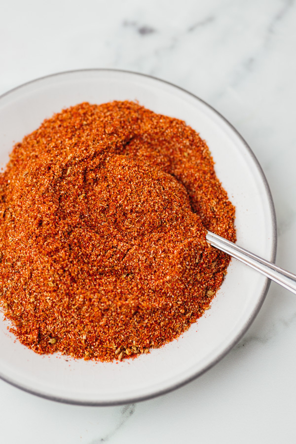

Fajita Seasoning

Description
The best fajita seasoning you have ever tried. Includes all sorts of spices and a nice sweet and spicy taste to really amplify your fajitas
ingredients
- 1 tablespoon cornstarch
- 2 teaspoons chili powder
- 1 teaspoon salt
- 1 teaspoon ground paprika
- 1 teaspoon white sugar
- 1/2 teaspoon onion powder
- 1/2 teaspoon garlic powder
- 1/2 teaspoon ground cumin
- 1/4 teaspoon cayenne pepper
Directions
- whisk all ingredients togethar and sprinkle evenly across fajita meat
- pat down after seasoning and cook the meat